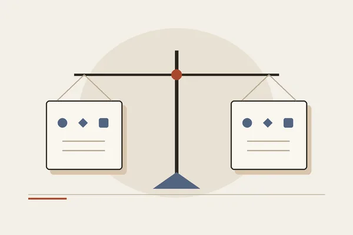

Preprint · Oct 2026
A fair way to ask “is this a language?”
Zhang and Sheng · arXiv 2610.34499

In a sentence
Give both explanations the same effort, then judge them on text neither has seen.
In plain words
Is the Voynich manuscript a hidden language, or meaningless copying? The authors write each explanation as a machine that produces text, give both machines the same amount of tuning, and score them on pages kept aside. They checked the method on 28 texts in 16 languages and on planted messages.
Technical detail
Both hypotheses (meaningless copying vs enciphered language) are written as generative programs, fitted with the same search budget and compared on held-out statistics. Adds a decipherment-free signal (the same word pairs keep sharing a line), calibrated on 28 texts in 16 languages plus planted messages. No code link. The line signal does not transfer: Indus texts average 4.6 signs on a single line.
How we read it
Read: partial (abstract, sections 1-2, 4.3, 5.1, 5.4, 7 opening, 8 results, 9 discussion, 10 conclusion and limitations read; appendices and sections 6.1-6.4 skimmed only). Sources opened: arxiv.org/pdf/2610.34499.
What they did
- They wrote the two main accounts of the Voynich manuscript, meaningless copying and an enciphered language, as programs that fill the manuscript’s pages and lines word by word.
- Every program drew new words from the same word models and got the same search budget, and every cipher had a copying scribe so that local repetition favoured neither side.
- They fitted the programs to one set of statistics and judged them on 15 held-out statistics that no program was fitted to.
- They built a language signal that needs no decipherment: whether word pairs that share a line recur together in lines elsewhere in the book, calibrated on 28 texts in 16 languages and on ciphers of those texts with known miscopying.
- They ran solvers only after checking that each solver could read controls enciphered the way it assumes, and they planted hidden messages to measure what a search could still miss.
What they found
- The Timm and Schinner copying program misses none of the 15 held-out statistics by more than five standard deviations, while one-key word and Naibbe ciphers miss one by more than a hundred (section 4.3, p. 10).
- The statistic that separates them is the glyph-pair difference between Currier A and B pages: 0.093 bits in the manuscript, against 0.003 to 0.005 predicted by one-key ciphers (section 4.3, p. 10).
- Ciphers with two keys, or that encode only word classes, fit as well as copying; no program passes the joint check over all 37 statistics (section 4.3, pp. 10-12).
- The word-pair replication of 28 natural texts lies between 0.139 and 0.411; the manuscript reaches 0.071 in one transliteration and 0.053 in the other (section 5.1, p. 16).
- Word and syllable codes keep 52 to 84 percent of their plaintext’s word-pair replication at the fitted miscopying rate and 11 to 23 percent at 60 percent miscopying (section 5.1, p. 17).
- Four published measures of language, including the conditional entropy of Rao et al. 2009 and Sproat’s repetition share, cannot separate copying programs from language texts, because copying also makes text regular (sections 1 and 5.4, Table 6).
- One cipher stays open, a two-key nomenclator whose scribe miscopies more than half the words, and only for Arabic and Hebrew (sections 9 and 10).
- The authors say the word-pair test suits long texts with word breaks and gives the short, undivided Indus inscriptions little to count (section 9, ‘Other undeciphered texts’, p. 35).
Strengths and limits
- The core rule, equal search effort for each account and judgement on statistics left out of the fit, is sound and transfers to any undeciphered corpus.
- Every negative result is backed by controls that the same test reads, which is what turns a failed decipherment into evidence.
- The copying programs were built from close study of the manuscript, so they bring knowledge the ciphers lack, as the authors admit (Limitations).
- Results hold only for the ciphers, languages and solvers tried; the solvers use bigram models and cannot read some controls, such as Hebrew.
- No code or data link is given in the paper, so the programs cannot be rerun as they stand.
What the authors say comes next
- Apply the same tests to other undeciphered texts: the published measures and calibrated solvers work for any script if meaningless texts from a plausible process are built as controls. (Section 9, ‘Other undeciphered texts’, p. 35)
- Any claimed reading of the manuscript should be checked with solvers calibrated on enciphered controls and on twin texts that keep the code but lose the language. (Section 9, ‘Calibration’, p. 34)
- A copying account must still explain why glyph dependence crosses word spaces but stops at line breaks, while placing spaces as the manuscript does. (Section 9, ‘The boundary between words’, p. 34)
- Untested cipher types remain: keys that change along the text, other transpositions, and plaintexts transformed before enciphering. (Limitations, p. 35)
Ideas it gives us
- Use a site-to-site divergence as a held-out statistic, the Indus analogue of the Currier A/B glyph difference: fit an emblem-slot generator, a copying generator and a word-sign language generator to Mohenjo-daro texts with equal budget, then score each on the sign-pair divergence between Mohenjo-daro and Harappa. In the Voynich case this single held-out statistic separated one-key ciphers from copying by over a hundred standard deviations; a fixed-lexicon model and a drifting copy model make different predictions about between-site divergence. Open data enough: yes. Needs: M77 with site codes (project corpus), SIGIL rebuild, near-copy family splits.
- Adapt the word-pair replication signal to whole texts: for non-adjacent sign pairs, compute their excess co-occurrence within texts against a shuffle that keeps first and last signs fixed, in two halves (alternating objects or two cities), and correlate the halves after removing near-copies. Run a planted-language power check first. Language keeps recurring pairs across the corpus while copying makes only local pairs; the authors warn that short texts may give too little to count, so the power check decides whether it is worth running. Open data enough: yes. Needs: M77 and ICIT, near-copy families, planted short-text language controls and SIGIL.
- Before any reopened Indus key is scored, build twin texts that keep the key’s sign-to-value code but scramble the underlying content, and report how much the solver reads in the twins. This measures how much ‘reading’ a method produces with no language present, which the paper shows is large for codes with many homophones. Open data enough: yes. Needs: The proposed key and the project’s existing key-scoring bench.
What we take from it
Using itThe equal-effort, held-out rule is now our standard for any reopened “language or code” test.